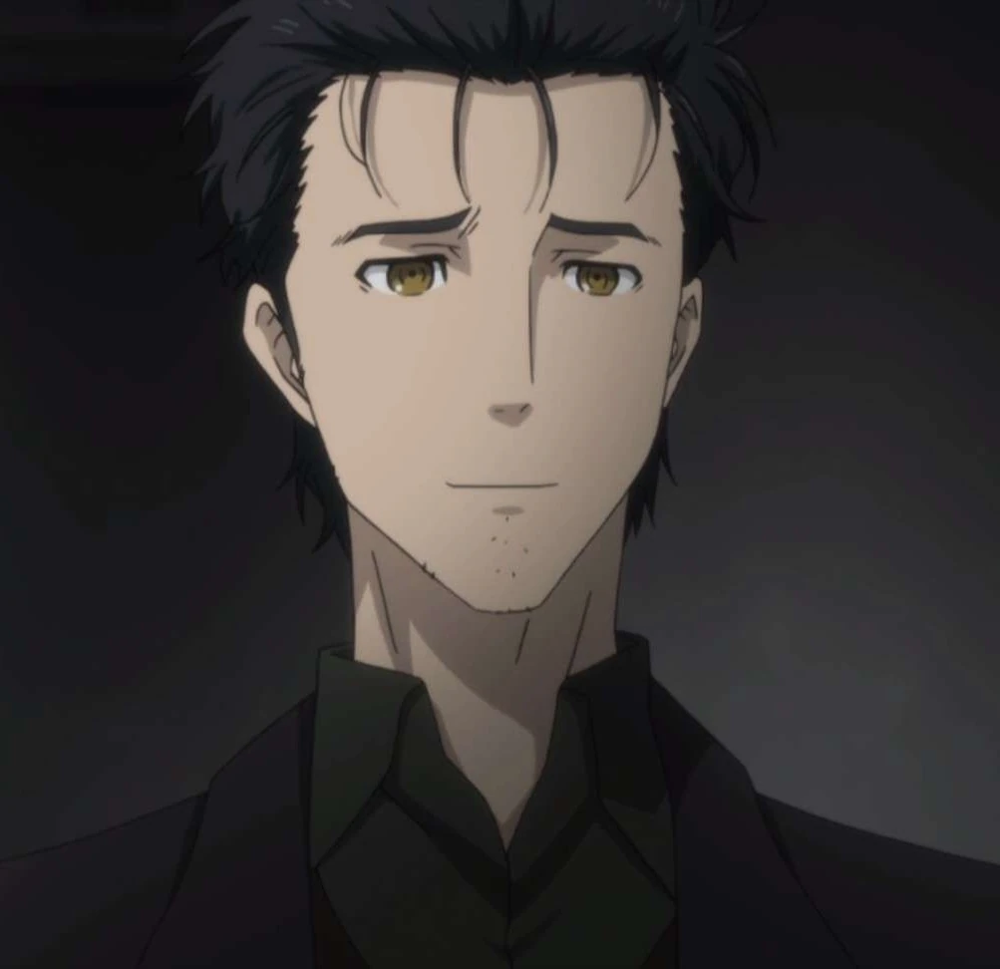

Okabe Rintarou

Krótki opis bohatera
Hyouunin Kyouma to założyciel słynnej organizacji robiącej różnego rodzaju gadgety. Znany jest z tego, że chce zaprowadzić chaos w świecie i uciec przed systemem. Ma również inklinacje egzorcystyczne (i nie tylko!).